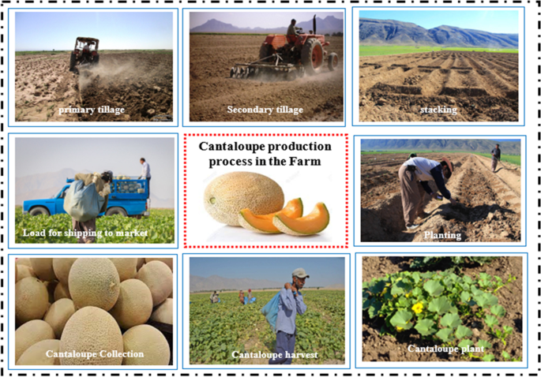

Muskmelon
Types of Muskmelon:
American Muskmelon (Cucumis melo var. reticulatus):
Also Known As: Cantaloupe.
Description: Characterized by its netted rind and sweet, orange flesh.
Uses: Commonly eaten fresh, in fruit salads, or as a dessert.
Growth Conditions: Prefers warm weather and well-drained soils. It thrives in full sun.
Varieties: Includes various cultivars with different flesh colors and sweetness levels.
European Muskmelon (Cucumis melo var. inodorus):
Also Known As: Honeydew melon.
Description: Has a smooth, pale yellow or green rind and sweet, green flesh.
Uses: Eaten fresh, in smoothies, or as a refreshing snack.
Growth Conditions: Thrives in warm climates and well-drained soils with plenty of sunlight.
Characteristics: Known for its high sugar content and juicy texture.
Asian Muskmelon (Cucumis melo var. saccharinus):
Also Known As: Korean melon or chamoe.
Description: Oval-shaped with a smooth, yellow skin and sweet, crisp flesh.
Uses: Eaten fresh or used in salads and desserts.
Growth Conditions: Prefers warm weather and well-drained soil, often grown in greenhouses.
Nutritional Value: Low in calories and high in vitamins A and C.
Growing Conditions
Climate:
Temperature:
Germination Stage: Muskmelon seeds require a soil temperature of around 20°C to 30°C for optimal germination. Low soil temperatures below 15°C can delay germination.
Vegetative Growth Stage: During the vegetative phase, muskmelons prefer warm temperatures between 20°C and 30°C. This range supports optimal leaf development and vine growth.
Reproductive Stage: As muskmelons transition to flowering and fruiting, temperatures between 25°C and 35°C are favorable. However, excessive heat above 35°C can negatively impact fruit set and quality.
Harvest Stage: Warm and dry conditions are ideal during harvest to ensure the melons are ripe and reduce spoilage.
Rainfall and Moisture:
Moderate Rainfall: Muskmelons require moderate rainfall, generally between 400mm to 600mm per growing season. Timely rainfall is essential during germination and fruit development.
Irrigation: In regions with insufficient rainfall, irrigation is crucial to maintain adequate soil moisture, especially during critical periods like flowering and fruit filling. Over-irrigation should be avoided to prevent waterlogging and root diseases.
Drought Resistance: Some muskmelon varieties are bred for drought resistance and can tolerate dry conditions better, making them suitable for arid regions.
Sunlight:
Muskmelons require full sunlight for at least 6 to 8 hours a day. Adequate sunlight is essential for photosynthesis, which drives plant growth and fruit development.
Cloudy conditions during critical growth phases can reduce photosynthetic activity and affect fruit yield.
Humidity:
Muskmelons prefer moderate humidity levels. High humidity can create conditions favorable for fungal diseases, which can significantly impact yield and quality.
Proper field management practices, such as maintaining adequate spacing between plants and timely application of fungicides, can help manage disease pressure in high-humidity conditions.
Wind:
Mild winds can aid in pollination by helping to distribute pollen. However, strong winds can cause lodging, where the muskmelon vines fall over, making harvesting difficult and reducing yield.
Windbreaks or shelterbelts can be used to protect muskmelon fields from strong winds, helping to maintain plant stability and health.
Soil:
Soil Type:
Loamy Soil: Muskmelons thrive best in loamy soils, which provide good drainage while retaining enough moisture for optimal growth.
Sandy Soil: Sandy soils can also be suitable for muskmelons, provided they are well-drained. These soils allow for good root penetration but may require additional organic matter to improve nutrient content.
Clayey Soil: Clayey soils can be used for muskmelons if they are well-drained to prevent waterlogging. Proper management is essential to ensure good aeration.

Soil Structure:
Well-Drained: Muskmelons require well-drained soil to prevent waterlogging, which can lead to root rot and other diseases.
Good Aeration: Proper soil aeration is essential for root respiration and overall plant health. Well-aerated soils support vigorous root growth and nutrient uptake.
Soil Fertility:
Nutrient-Rich: Muskmelons grow best in fertile soils with adequate levels of essential nutrients such as nitrogen (N), phosphorus (P), potassium (K), and micronutrients (e.g., zinc, iron, copper).
Organic Matter: The presence of organic matter in the soil enhances soil fertility by providing nutrients and improving soil structure. Organic matter also supports beneficial soil microorganisms.

Soil pH:
Optimal pH Range: Muskmelons prefer a slightly acidic to neutral soil pH, typically between 6.0 and 7.5. Soils outside this pH range may require amendments to adjust the pH to an optimal level.
pH Management: Lime can be added to acidic soils to raise the pH, while sulfur or organic matter can be used to lower the pH of alkaline soils.
Soil Preparation:
Plowing and Tilling: Proper soil preparation involves plowing and tilling to create a fine seedbed, improving soil structure, eliminating weeds, and incorporating organic matter or fertilizers.
Leveling: Leveling the field ensures uniform irrigation and prevents waterlogging in low-lying areas, facilitating efficient planting and crop management.
Soil Conservation:
Erosion Control: Practices such as contour plowing, terracing, and maintaining ground cover help prevent soil erosion, which can deplete soil fertility and structure.
Crop Rotation: Rotating muskmelons with other crops, such as legumes, can improve soil health by reducing the buildup of pests and diseases and enhancing soil nutrient levels through nitrogen fixation.
Water Requirements:
General Water Needs:
Muskmelons require approximately 400-600 millimeters (mm) of water throughout their growing season, depending on the variety, climate, and soil conditions.
Critical Growth Stages:
Germination: Adequate soil moisture is necessary for seed germination and seedling establishment.
Vegetative Stage: Water is crucial during the vegetative stage to promote leaf and vine development.
Flowering: Adequate moisture at the flowering stage ensures proper flower and fruit development.
Fruit Filling: Irrigation during the fruit filling stage is vital for achieving good fruit size and sweetness.
Late Season: Reducing irrigation towards the end of the growing season allows the soil to dry, facilitating harvesting and preventing lodging.
Drought and Stress Management:
Drought-Resistant Varieties: Plant drought-resistant muskmelon varieties in regions prone to water scarcity. These varieties are bred to withstand periods of water stress.
Deficit Irrigation: Implement strategies where water is applied during the most critical growth stages to manage water resources during drought conditions.
Planting and Seeding:
Planting:
Muskmelons can be sown either by broadcasting seeds or by using seed drills for more uniform planting. They are typically sown in the spring after the last frost date.
Seeding Rates:
The seeding rate varies but generally ranges from 2 to 4 kg per hectare, depending on the variety and planting method.
Nutritional Value:
Carbohydrates:
Muskmelons are a rich source of carbohydrates, providing energy.
Fiber:
Muskmelons are high in dietary fiber, promoting digestive health.
Vitamins and Minerals:
Muskmelons contain essential nutrients, including vitamins A and C, potassium, and folate.
Uses:
Food:
Muskmelons are commonly eaten fresh, in fruit salads, smoothies, or as a refreshing snack. The flesh is sweet and juicy, making it a popular choice in summer.
By-Products:
Muskmelon seeds can be used to produce oil, and the rind can be utilized in various culinary applications or as animal feed.
Environmental Impact and Sustainability:
Muskmelons are relatively sustainable crops, requiring less water compared to other fruits. They contribute to soil health through crop rotation and can be grown using sustainable practices such as organic farming and integrated pest management to minimize environmental impact.
